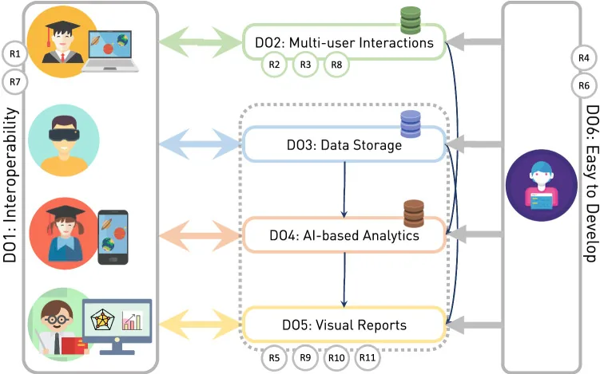
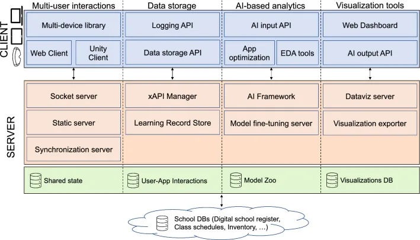
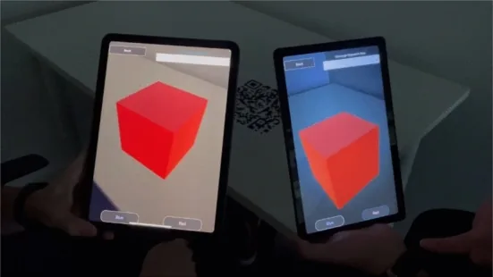
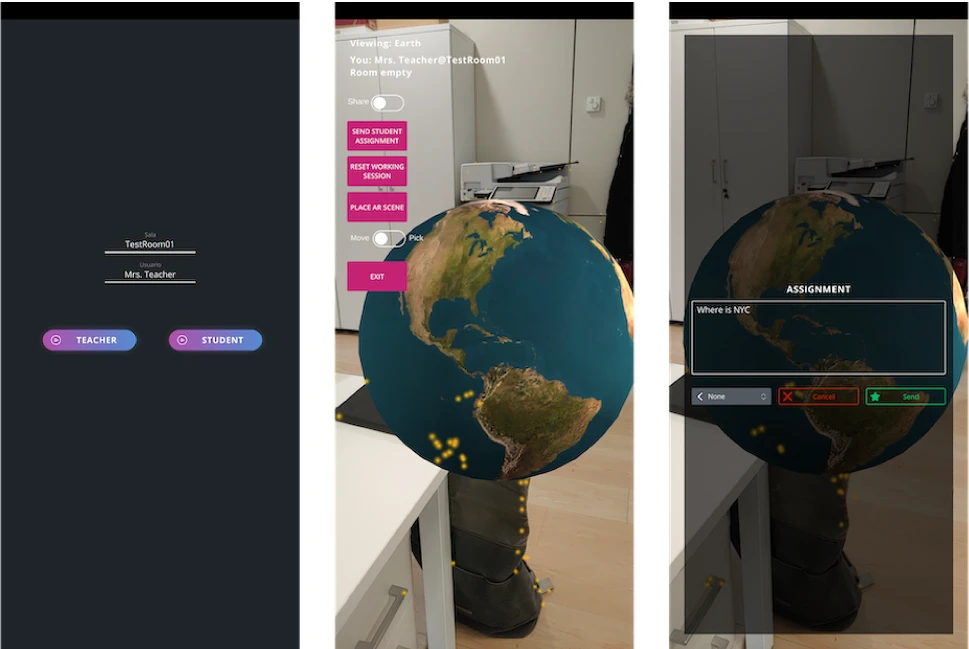

cleAR is a modular, interoperable software architecture for building multi-user augmented reality (AR) applications tailored to educational settings. It was the core contribution of my PhD research, developed in collaboration with the University of the Basque Country (UPV/EHU) and Vicomtech. The work was published in the Virtual Reality journal (Springer, 2023).
Despite the well-documented benefits of AR in learning, improved motivation, better concept assimilation, easier knowledge transfer, its adoption in classrooms remains remarkably limited. Two barriers stand out: the difficulty of implementing collaborative, multi-user scenarios and the challenge of integrating AR tools into existing school infrastructure and curricula. cleAR was designed to address both.
Design Objectives
The architecture was built around six design objectives (DOs) derived from a systematic survey of 47 primary and secondary school teachers and an extensive review of the literature.

- DO1: Interoperability: Cross-platform support for head-mounted displays, tablets, smartphones, and browsers, as well as compatibility with existing AR frameworks and learning management systems.
- DO2: Multi-user interactions: Real-time collaboration between students and teachers, both in-person and remotely.
- DO3: Long-term storage: Persistent capture of student progress, task completion, and interaction data for longitudinal analysis.
- DO4: Data visualisation: Automatic generation of reports and interactive dashboards accessible to teachers without programming skills.
- DO5: AI integration: Support for machine learning pipelines that can surface usage patterns, estimate task difficulty, and flag students at risk of falling behind.
- DO6: Ease of development: A clean, well-documented API surface so developers can build new AR experiences without reimplementing common infrastructure.
Architecture
cleAR is structured as four loosely coupled modules that can be composed independently or used as an integrated stack.

Real-time multi-user library. A WebSocket-based server-side component manages low-latency session routing, room organisation, and user limits. Client-side libraries expose simple APIs for connecting to sessions, exchanging messages, and synchronising multimedia playback across devices. WebRTC integration handles audio and video streams.
Logging and data storage module. Student interactions are serialised and forwarded to a Learning Record Store (LRS) via the xAPI standard, making cleAR compatible with any LMS that supports xAPI. The module supports configurable data collection frequency, anonymisation, and role-based access (admin, teacher, student).
AI-based analytics module. A framework-agnostic server-side component processes three data types produced during AR sessions: natural text (chat, answers), structured tabular logs, and image data from camera feeds. It supports both supervised and unsupervised learning and can train models from scratch or fine-tune existing ones. The most common teacher-identified use cases were usage-pattern analysis (63%), automatic test difficulty estimation (60%), and early identification of struggling learners (58%).
Visual reporting module. A code-free web interface for generating interactive dashboards and charts from stored xAPI data, built on D3 and Seaborn. Visualisations are rendered client-side to preserve privacy, with export options to local storage, external databases, or the school LMS.
Proof-of-Concept Applications
Three proof-of-concept applications were developed to validate the architecture against the design objectives.
AR Cube: a minimal multi-user app in which up to four users share a virtual cube and can manipulate its rotation and colour in real time across iOS, Android, Windows, and Linux. The core collaborative logic required fewer than 400 lines of code, demonstrating DO6. Average end-to-end latency was 205 ms on both Wi-Fi and 4G.

xAPI Data Analysis: a stress-test scenario generating ~80,000 xAPI statements from 10 concurrent clients, stored in MongoDB via Learning Locker on AWS. Average processing delay was 145 ms (maximum 314 ms). A classification model trained on the collected data successfully predicted the originating client from the xAPI triplet, validating DO3–DO5.
AR Geography Quiz: the most complete proof-of-concept, placing a teacher and multiple students around a shared 3D Earth model. Students can explore individually or switch to a synchronised shared-perspective mode where the teacher controls the view and sends targeted questions. The application runs on both desktop and mobile (Android/iOS) and demonstrates the full cleAR stack end-to-end.

Impact
Every multi-user AR application ends up reimplementing the same three things: a way to synchronise state across devices, somewhere to store what students did, and a way to surface that data to teachers. cleAR does all three, so you don't have to. All proof-of-concept source code is released as open-source software.
The work was published in Virtual Reality (Springer) in 2023 and fed directly into ARoundTheWorld, the first full application built on the architecture.